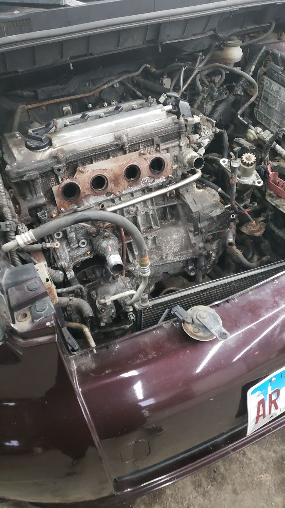
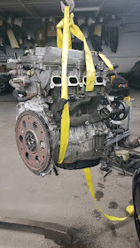
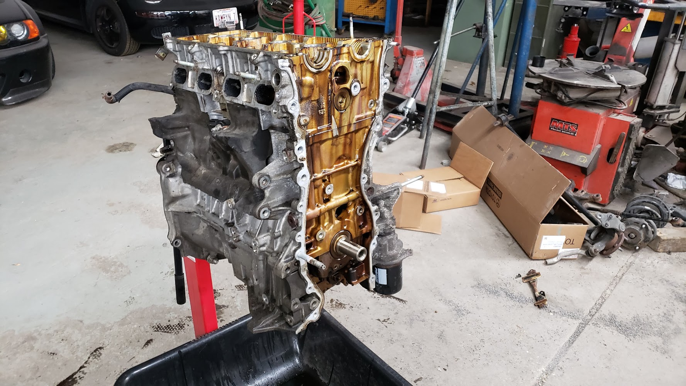
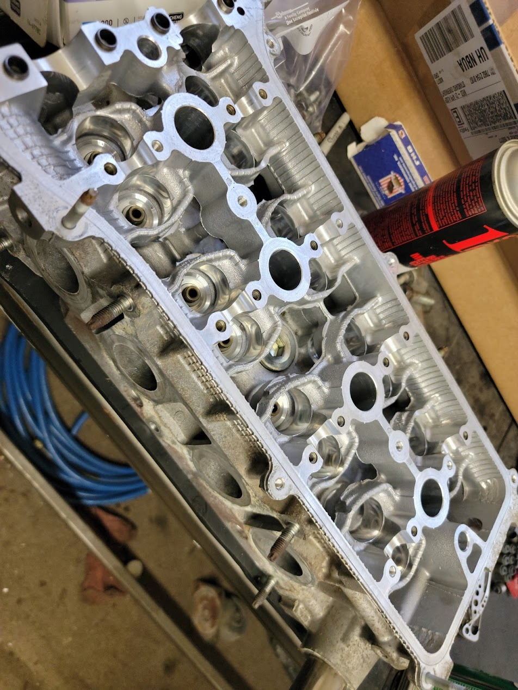
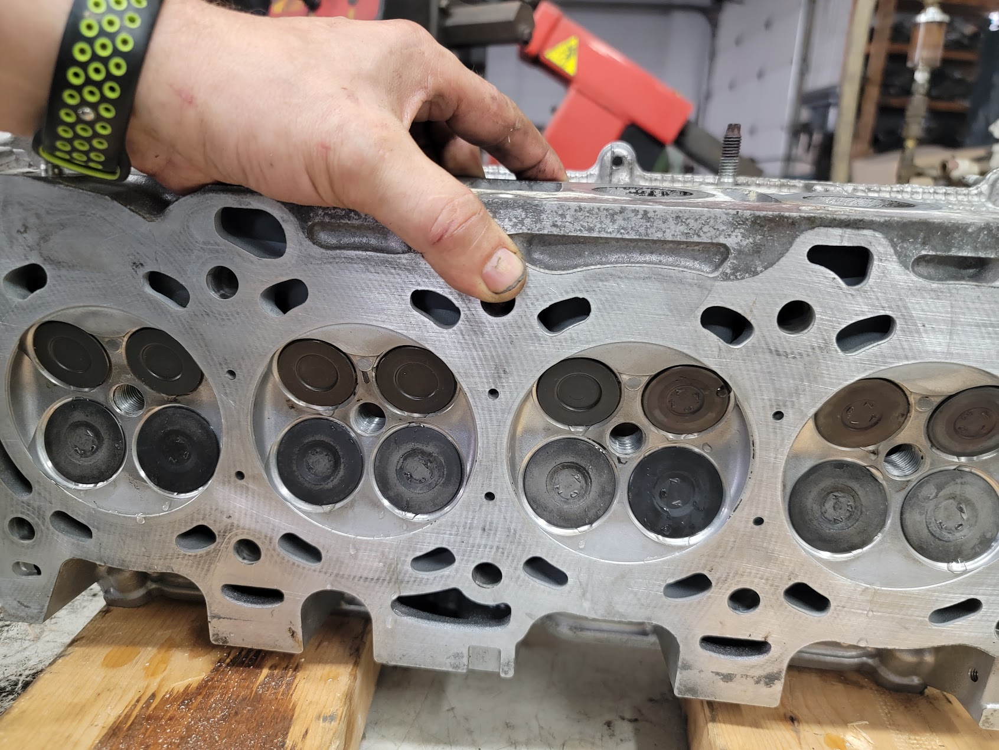
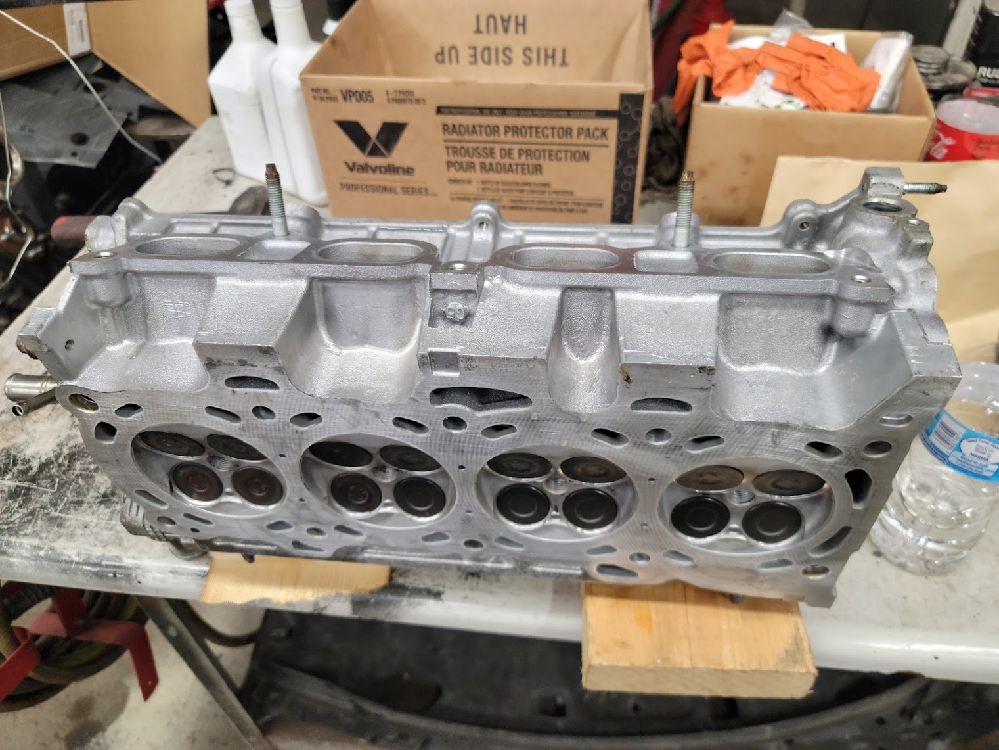
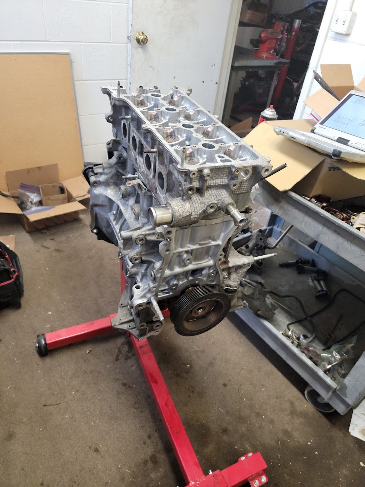

During the COVID pandemic I needed a reliable way to commute between home and college — but I couldn’t afford a working car. So I bought one with a blown engine for next to nothing and spent the better part of a year teaching myself to rebuild it, until it started and drove again. This is less a car story than a problem-solving one: the same approach I bring to engineering, applied to a very physical, very stubborn problem.
I needed dependable transportation between home and college during the pandemic, but a working car simply wasn’t in my budget. Doing nothing wasn’t an option — I had to find another way.
The Approach
I bought a car with a blown engine for almost nothing and committed to fixing it myself — researching everything I didn’t know, pulling the engine, and tearing it down to find the real fault rather than guessing.
The Outcome
After roughly a year of nights and weekends, the rebuilt engine went back in and the car drove again. I had my transportation — and a proven ability to take on an intimidating, unfamiliar system and see it through.
The Process
From a dead engine to driving again
A roughly six-month teardown-to-rebuild, documented step by step. I had never done this before — every stage was research, careful work, and verifying I’d gotten it right before moving on.

Step 01 · Diagnosis
Where it started: a non-running engine. Before touching anything, I worked to confirm what had actually failed instead of guessing — the same “reproduce and isolate it first” step I use when debugging software.
Step 02 · Engine Out
With zero prior experience, I researched the full removal procedure and labeled every line and connector so nothing would be lost. The entire engine came out so I could get to the real problem.

Step 03 · Removed
The engine fully clear of the car. Taking on something this far outside my comfort zone meant trusting the process and moving one careful, deliberate step at a time.

Step 04 · Teardown
Splitting the block open to reach the root cause. I documented every part as it came apart so it could go back together correctly months later — organization is half the battle.

Step 05 · Rebuild
Cleaning and reconditioning components down to bare metal. Patience and attention to detail at this stage decide whether the finished engine runs reliably or fails.

Step 06 · Inspection
Inspecting the cylinder head and valves, verifying each part met spec before reassembly. Measure twice, assemble once — small errors here compound into big failures later.

Step 07 · Reassembly
Reconditioned parts staged with new seals and gaskets, going back together in the correct sequence. Rebuilding the engine piece by piece, double-checking each step against what I’d learned.

Step 08 · Back Together
The fully rebuilt engine, reassembled and ready to go back in the car. Soon after this it started, ran, and drove — problem solved, the hard way.
Why it belongs on a software portfolio
What it taught me about engineering
This wasn’t a software project, but it shaped how I work as a developer. The instincts are the same whether the system is an engine or a codebase:
Systematic debugging — isolate the real fault before changing anything, whether it’s a no-start engine or a failing test.
Root-cause analysis — tear a complex system down to where the problem actually lives instead of patching symptoms.
Self-directed learning — pick up an unfamiliar, complicated system from scratch and become competent through research and iteration.
Persistence — stay with a hard, frustrating problem over months until it is genuinely solved, not just set aside.
Attention to detail — in an engine, like in code, small mistakes compound; careful, documented work is what makes it hold together.